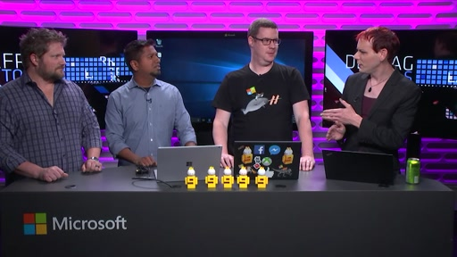
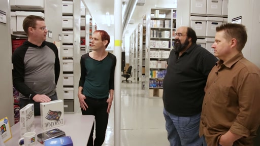
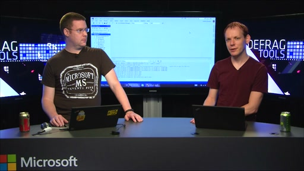
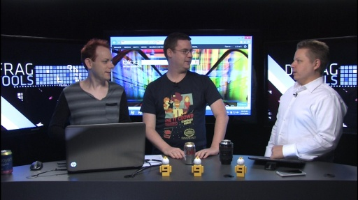
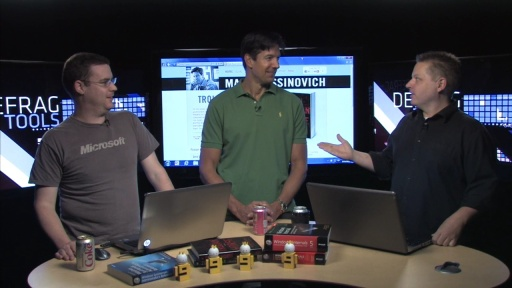

Andrew Richards, Chad Beeder and Gov Maharaj host this deep dive into the tools used to troubleshoot systems. Each Defrag Tools show focuses on a specific tool, going deep into its features, explainin…
Defrag Tools #202 - InfoSec with Paula Januszkiewicz[MP4] [0:23:55] [2019/03/18]In this episode of Defrag Tools, Paula Januszkiewicz from CQURE, joins us to discuss Information Security (InfoSec). We talk about what InfoSec is, how to get started, what the role entails, and how…
Defrag Tools #201 - Game Show Part 2[MP4] [0:37:19] [2019/02/11]The celebrate the 200th episode of Defrag Tools, three Microsoft Legends join us in the Channel 9 Studios, with a live studio audience, for a Game Show! Questions range from campus trivia, all the way…
Defrag Tools #200 - Game Show Part 1[MP4] [0:33:38] [2019/02/11]The celebrate the 200th episode of Defrag Tools, three Microsoft Legends join us in the Channel 9 Studios, with a live studio audience, for a Game Show! Questions range from campus trivia, all the way…
Defrag Tools #199 - Desktop App Assure[MP4] [0:24:39] [2018/10/29]In this episode of Defrag Tools, Chris Jackson, the "App Compat Guy" (@appcompatguy), joins us to discuss Windows Desktop App Assure - a program for eligible customers and partners to access…
Defrag Tools #198 - AaronLocker[MP4] [0:39:38] [2018/10/08]In this episode of Defrag Tools, Aaron Margosis joins us to discuss AaronLocker - a set of scripts that help you configure AppLocker. AppLocker restricts application execution, auditing or protecting…
Defrag Tools #197 - Windows Defender ATP[MP4] [0:28:15] [2018/10/01]In this episode of Defrag Tools, Chris Jackson, the "App Compat Guy" (@appcompatguy), joins us to discuss Windows Defender Advanced Threat Protection (ATP) - a unified platform for…
Defrag Tools #196 - Windows Defender Application Guard[MP4] [0:23:22] [2018/08/20]In this episode of Defrag Tools, we discuss Windows Defender Application Guard, a great security feature in the Edge browser which allows you to easily run browser sessions in a virtual machine.
Defrag Tools #195 - Console Command Favorites[MP4] [0:22:20] [2018/08/06]In this episode of Defrag Tools, we geek out on our favorite Command Prompt commands. Command covered: where.exe - Where Shows where a executable/script is on the PATH environment variable where…
Defrag Tools #194 - Windows Upgrade - Application and Device Inventory Files[MP4] [0:17:53] [2018/07/09]In this episode of Defrag Tools, we continue talking about the Windows Upgrade Log files. We delve into the Application and Device Inventory Files, that describe application compatibility issues…
Defrag Tools #193 - Windows Upgrade Logs[MP4] [0:24:35] [2018/07/02]In this episode of Defrag Tools, we talk about the Windows Upgrade Log files. The "Panther" logs track the installation of a Windows Upgrade. The logs contain Information, Warnings and…
Defrag Tools #192 - Windows Update and Windows Upgrade[MP4] [0:26:20] [2018/06/25]In this episode of Defrag Tools, we talk about Windows Update and Windows Setup. We describe the different technologies, what each does to download the software, prepare the installation, and finish…
Defrag Tools #191 - HRESULT Error Codes[MP4] [0:24:24] [2018/04/23]In this episode of Defrag Tools, we talk about HRESULT based Error Codes. The 32bits in the HRESULT have meanings, allowing the reader to gain additional insights into the error. Of note: The 32nd bit…
Defrag Tools #190 - Performance Power Slider[MP4] [0:19:36] [2018/03/26]In this episode of Defrag Tools, Chad Beeder is joined by Jorge Novillo and Ojasvi Choudhary to discuss the Performance Power Slider in Windows 10. We discuss how it works, how hardware partners can…
Defrag Tools #189 - Inside Show[MP4] [0:03:01] [2018/01/29]Announcing the Inside Show, the show that takes you inside Windows! Inside covers Windows Features, Windows Internals, Exception Codes, Bugcheck Codes and Debugger Commands. Each episode is just 5…
Defrag Tools #188 - Cyber Monday - What tech to buy?[MP4] [0:31:52] [2017/11/27]In this episode of Defrag Tools, Chad Beeder and Andrew Richards talk about what tech you could buy on Cyber Monday. We talk about USB Sticks, USB Cables, MicroSD Readers, International Power…
Defrag Tools #187 - Ninjacat Unicorn[MP4] [0:11:59] [2017/10/30]In this episode of Defrag Tools, Chad Beeder and Andrew Richards talk to Marc Goodner and Reid Borsuk about the maker community at Microsoft, and the cool Ninjacat statue they built. Make sure to…
Defrag Tools #186 - Time Travel Debugging - Advanced[MP4] [0:27:45] [2017/10/23]In this episode of Defrag Tools, Andrew Richards is joined by JCAB (Juan Carlos Arevalo Baeza) and Jordi Mola from the Windows Debugger team to demonstrate some more advanced usage of a new feature of…
Defrag Tools #185 - Time Travel Debugging - Introduction[MP4] [0:19:30] [2017/09/26]In this episode of Defrag Tools, Chad Beeder is joined by James Pinkerton and Ivette Carreras to introduce a new feature of WinDbg Preview: Time Travel Debugging (TTD). Related Links: WinDbg Preview…
Defrag Tools #184 - JavaScript in WinDbg Preview[MP4] [0:21:07] [2017/09/18]In this episode of Defrag Tools, we continue our series on the new WinDbg Preview. Andrew Richards is joined by Bill Messmer to talk about the updated scripting engine. Related Links: WinDbg Preview…
Defrag Tools #183 - WinDbg Preview Part 2[MP4] [0:09:38] [2017/08/29]In this episode of Defrag Tools, Chad Beeder is joined by Nickolay Ratchev and Tim Misiak to show off some features of WinDbg Preview, a new version of the WinDbg tool. Also see our previous episode,…
Defrag Tools #182 - WinDbg Preview Part 1[MP4] [0:11:14] [2017/08/29]In this episode of Defrag Tools, Chad Beeder is joined by Tim Misiak and Andy Luhrs to introduce WinDbg Preview, a new version of the WinDbg tool. Also see our followup episode: Defrag Tools #183 -…
Defrag Tools #181 - System Power Report[MP4] [0:32:04] [2017/06/26]In this episode of Defrag Tools, Chad Beeder and Andrew Richards are joined by Paresh Maisuria from the Windows Kernel Power team and Zach Holmes from the Fundamentals team to talk about System Power…
Defrag Tools #180 - Active Memory Dump[MP4] [0:21:35] [2017/06/19]In this episode of Defrag Tools, Graham McIntyre joins Andrew Richards and Chad Beeder to talk about the new Active Memory Dump type. This new kernel dump size replaces the Complete Memory Dump type,…
Defrag Tools #179 - Manually Generating a Crash Dump[MP4] [0:32:25] [2017/06/12]In this episode of Defrag Tools, Andrew Richards and Chad Beeder walk through the process of manually creating a full memory dump via the keyboard. This is useful when you want to capture the state of…
Defrag Tools #178 - Sysinternals ProcDump v9.0[MP4] [0:29:35] [2017/06/05]In this episode of Defrag Tools, Andrew Richards and Chad Beeder talk about the new features of Sysinternals ProcDump v9.0 Multiple Dumps per trigger in multiple Dump Sizes: -mm Write a 'Mini' dump…
Defrag Tools #177 - Windows Internals 7th Edition Part 1[MP4] [0:14:45] [2017/05/22]In this episode of Defrag Tools, Andrew Richards and Chad Beeder are joined by Alex Ionescu and Pavel Yosifovich, authors of the Windows Internals 7th Edition Part 1 book. We talk to Alex in the…
Defrag Tools #176 - CMD and PowerShell Context Menus[MP4] [0:33:42] [2017/03/13]In this episode of Defrag Tools, Andrew Richards and Chad Beeder delve into the way the Shell uses the registry to provide the Right-Click behavior of a (File Explorer) Folder. We add sub-menus to the…
Defrag Tools #175 - Debugging the Network Stack[MP4] [0:38:46] [2017/03/06]In this episode of Defrag Tools, Chad Beeder is joined by Jeffrey Tippet from the Windows Networking team to talk about how to debug networking problems in NDIS (Network Driver Interface…
Defrag Tools #174 - Security Baseline, Policy Analyzer and LGPO[MP4] [0:24:23] [2017/02/13]In this episode of Defrag Tools, Andrew Richards and Chad Beeder are joined by Aaron Margosis. We talk about the Security Baseline for Windows 10. We also look at the Policy Analyzer and Local Group…
Defrag Tools #173 - Troubleshooting with the Windows Sysinternals Tools, 2nd Edition[MP4] [0:16:35] [2017/01/30]In this episode of Defrag Tools, Andrew Richards and Chad Beeder are joined by Aaron Margosis, the co-author of the Sysinternals book -- now in its 2nd Edition! Troubleshooting with the Windows…
Defrag Tools #172 - Application Hangs[MP4] [0:23:47] [2017/01/09]In this episode of Defrag Tools, Andrew Richards and Chad Beeder talk about Application Hangs. We collect a dump of a process and debug it with the Debugging Tools for Windows. Resources:Defrag Tools:…
Defrag Tools #171 - Application Insights Profiler[MP4] [0:18:51] [2016/12/12]In this episode of Defrag Tools, Andrew Richards and Chad Beeder talk to Dan Taylor and Chuck Weininger about Application Insights Profiler. The profiler allows you to get detailed performace data…
Defrag Tools #170 - Debugger - JavaScript Scripting[MP4] [0:36:47] [2016/10/03]In this episode of Defrag Tools, Andrew Richards talks to Andy Luhrs and Bill Messmer from the Debugging Tools for Windows team. We talk about the new JavaScript extensibility and scripting abilities…
Defrag Tools #169 - Debugging Tools for Windows Team[MP4] [0:16:41] [2016/09/26]In this episode of Defrag Tools, Andrew Richards talks to Andy Luhrs and Bill Messmer from the Debugging Tools for Windows team. We talk about what the team develops, what it is working on, the…
Defrag Tools #168 - Powercfg Sleep Study[MP4] [0:35:47] [2016/09/19]In this episode of Defrag Tools, Andrew Richards and Chad Beeder talk to Nashaat Soliman and Paresh Maisuria (program manager and developer from the Windows kernel power team) about the "Sleep…
Defrag Tools #167 - Debugging User Mode Crash Dumps Redux [MP4] [0:56:43] [2016/08/29]
[MP4] [0:56:43] [2016/08/29]In this episode of Defrag Tools, Andrew Richards and Chad Beeder use Debugging Tools for Windows (WinDbg) to determine the root cause of various application crashes which have occurred on Andrew's…
Defrag Tools #166 - Performance Analysis of UWP Apps[MP4] [0:32:50] [2016/08/15]In this episode of Defrag Tools, Sylvain Goyette joins Chad Beeder to discuss performance tracing of Universal Windows Platform (UWP) apps. (Sorry that Sylvain's screen is somewhat hard to read; we…
Defrag Tools #165 - Performance Tracing in OOBE[MP4] [0:25:24] [2016/08/08]In this episode of Defrag Tools, Sylvain Goyette joins Chad Beeder to talk about how to collect performance traces during Windows OOBE (Out of Box Experience). (Sorry that Sylvain's screen is somewhat…
Defrag Tools #164 - Sysinternals for Nano Server - Mark Russinovich[MP4] [0:19:16] [2016/07/04]In this episode of Defrag Tools, Mark Russinovich and Andrew Mason (Program Manager for Nano Server) join Andrew Richards to discuss the release of the Sysinternals tools for Windows Server - Nano…
Defrag Tools #163 - Virtual Hard Disk (VHD) - Sysinternals Disk2VHD[MP4] [0:31:09] [2016/05/23]In this episode of Defrag Tools, Chad Beeder and Andrew Richards discuss Virtual Hard Disk (VHD) files. We first dive into what a VHD is, how you can boot from a VHD by configuring bcdedit settings,…
Defrag Tools #162 - Defrag Show Crossover - Gov Maharaj[MP4] [0:40:06] [2016/05/09]In the spirit of Star Trek crossovers, Andrew Richards and Chad Beeder pay a visit to Gov (Rhymes With Orange) Maharaj, the co-host of The Defrag Show. We talk about how each series got started, the…
Defrag Tools #161 - Troubleshooting a Slow PC[MP4] [0:37:41] [2016/04/25]In this episode of Defrag Tools, Chad Beeder and Andrew Richards walk through using various tools to determine what is causing Andrew's computer to be slow and unresponsive. Resources: Process…
Defrag Tools #160 - Sysinternals PsPing[MP4] [0:24:08] [2016/04/18]In this episode of Defrag Tools, Chad Beeder and Andrew Richards discuss the PsPing command-line tool from Sysinternals - a more powerful replacement for the default "ping" command, which…
Defrag Tools #159 - Powercfg[MP4] [0:26:12] [2016/04/11]In this episode of Defrag Tools, Chad Beeder and Andrew Richards discuss the Powercfg command-line tool in Windows, which allows you to configure power management settings, and analyze power and…
Defrag Tools #158 - Media eXperience Analyzer part 6: Audio Offload[MP4] [0:12:44] [2016/04/04]In this episode of Defrag Tools, Chad Beeder and Jorge Novillo discuss a power saving feature in Windows: hardware offloading of Audio Processing Objects (APOs). We demonstrate how to use Media…
Defrag Tools #157 - Energy Estimation Engine (E3) [MP4] [0:17:20] [2016/03/28]
[MP4] [0:17:20] [2016/03/28]Collecting and visualizing Windows 10 Energy Estimation Engine (E3) data with "powercfg /srumutil" and ExcelIn this episode of Defrag Tools, Chad Beeder and Jorge Novillo take a look at the…
Defrag Tools #156 - Critical Path Analysis with Windows Performance Analyzer[MP4] [0:30:00] [2016/03/07]In this episode of Defrag Tools, Chad Beeder and Sylvain Goyette demonstrate how to do critical path analysis in Windows Performance Analyzer (WPA), to troubleshoot apps which have an unresponsive UI.…
Defrag Tools #155 - Boot Performance[MP4] [0:30:18] [2016/02/29]In this episode of Defrag Tools, Chad Beeder and Sylvain Goyette discuss how to analyze and optimize Windows boot performance, using tools available in the Assessment and Deployment Kit (ADK).…
Defrag Tools #154 - Memory Footprint and Leaks[MP4] [0:32:29] [2016/02/22]In this episode of Defrag Tools, Chad Beeder and Sylvain Goyette discuss how to diagnose issues related to memory usage, using tools available in the Assessment and Deployment Kit (ADK). We cover two…
Defrag Tools #153 - Media eXperience Analyzer part 5: Audio Glitch Analysis II[MP4] [0:13:11] [2016/02/08]In this episode of Defrag Tools, Chad Beeder and Jorge Novillo wrap up a series on Media eXperience Analyzer (MXA). We examine one more audio glitch scenario, and show how to use MXA to determine what…
Defrag Tools #152 - Media eXperience Analyzer part 4: Video Glitch Analysis[MP4] [0:10:43] [2016/02/01]In this episode of Defrag Tools, Chad Beeder and Jorge Novillo continue a series on Media eXperience Analyzer (MXA). We examine a video glitch scenario, and show how to use MXA to determine what…
Defrag Tools #151 - Media eXperience Analyzer part 3: Audio Glitch Analysis[MP4] [0:11:23] [2016/01/25]In this episode of Defrag Tools, Chad Beeder and Jorge Novillo continue a series on Media eXperience Analyzer (MXA). We examine an audio glitch scenario, and show how to use MXA to determine what…
Defrag Tools #150 - Media eXperience Analyzer part 2: Video Playback Power Saving[MP4] [0:25:40] [2016/01/11]In this episode of Defrag Tools, Chad Beeder is joined by Jorge Novillo and Jose Baldner. We look at some of the technologies introduced in recent Windows versions to reduce power consumption and…
DefragTools #149 - Media eXperience Analyzer part 1[MP4] [0:35:14] [2015/12/21]In this episode of Defrag Tools, Chad Beeder is joined by Jorge Novillo and Jose Baldner to introduce us to Media eXperience Analyzer (MXA). Media eXperience Analyzer (formerly WindowsXRay) is a tool…
Defrag Tools #148 - Windows Installer - ORCA[MP4] [0:25:32] [2015/12/14]In this episode of Defrag Tools, Andrew Richards and Chad Beeder talk about Windows Installer and the ORCA Editor. The ORCA Editor is used to view and author Windows Installer files (*.msi, *.msm,…
Defrag Tools #147 - Dependency Walker[MP4] [0:19:10] [2015/12/07]In this episode of Defrag Tools, Andrew Richards and Chad Beeder talk about Dependency Walker. A tool used to view the DLL Import dependencies of EXEs and DLLs, and to view the Exports.…
Defrag Tools #146 - WinDiff[MP4] [0:18:24] [2015/11/23]In this episode of Defrag Tools, Andrew Richards and Chad Beeder talk about WinDiff. A tool used to compare folders and files. Timeline:[01:20] - WinDiff[02:55] - x64 version available on Defrag Tools…
Defrag Tools #145 - Living Computer Museum[MP4] [0:45:15] [2015/11/16]In this special episode of Defrag Tools, following up on our most recent expeditions through the Microsoft Archives, Chad Beeder visits the Living Computer Museum in Seattle, and takes a hands-on trip…
[Defrag-Tools-144-Raymond-Chen-Microsoft-Archives-Part-2]
Defrag Tools #143 - Raymond Chen - Microsoft Archives Part 1[MP4] [0:52:11] [2015/11/02]In a two part special for Defrag Tools, Raymond Chen joins Andrew Richards and Chad Beeder to celebrate the 30 years of Windows. We travel to the Microsoft Archives building to reminisce over a…
Defrag Tools #142 - Raymond Chen - Old New Thing[MP4] [0:39:46] [2015/10/05]In this on-location special for Defrag Tools, Andrew Richards and Chad Beeder invade Raymond Chen's office. Raymond is a 23yr veteran of Microsoft, who's worked on everything from MS-DOS to the…
Defrag Tools #141 - Larry Osterman - API Contracts[MP4] [1:03:57] [2015/09/14]In a two part on-location special for Defrag Tools, Andrew Richards and Chad Beeder invade Larry Osterman's office on his 31st anniversary at Microsoft. Last week, we talked about his various office…
Defrag Tools #140 - Larry Osterman - 31 Years[MP4] [0:09:41] [2015/09/07]In a two part on-location special for Defrag Tools, Andrew Richards and Chad Beeder invade Larry Osterman's office on his 31st anniversary at Microsoft. This week, we talk about his various office…
Defrag Tools #139 - Debugging - 'dx' Command Part 2[MP4] [0:20:28] [2015/08/31]In this second episode of a two part series of Defrag Tools, Bill Messmer joins Andrew Richards and Chad Beeder to talk about the new 'dx' command in the Windows Debugger. Questions? Email us at…
Defrag Tools #138 - Debugging - 'dx' Command Part 1[MP4] [2015/08/24]In this two part series of Defrag Tools, Bill Messmer joins Andrew Richards and Chad Beeder to talk about the new 'dx' command in the Windows Debugger. Questions? Email us at defragtools@microsoft.com
Defrag Tools #137 - Debugging Kernel Mode Crashes and Hangs[MP4] [0:36:38] [2015/08/17]In this episode of Defrag Tools, Andrew Richards and Chad Beeder use Debugging Tools for Windows (WinDbg) to debug some kernel mode memory dumps. We investigate a kernel mode crash (BSOD), and a…
Defrag Tools #136 - Debugging User Mode Crash Dumps Part 2[MP4] [0:34:33] [2015/08/03]In this episode of Defrag Tools, Andrew Richards and Chad Beeder use Debugging Tools for Windows (WinDbg) to dig into a few more application crashes which have occurred on Andrew's computer. [00:00] -…
Defrag Tools #135 - Debugging User Mode Crash Dumps Part 1[MP4] [0:37:16] [2015/07/27]In this episode of Defrag Tools, Andrew Richards and Chad Beeder use Debugging Tools for Windows (WinDbg) to determine the root cause of various application crashes which have occurred on Andrew's…
Defrag Tools #134 - Microsoft Symbol Proxy (SymProxy)[MP4] [0:44:31] [2015/07/20]In this episode of Defrag Tools, Andrew Richards and Chad Beeder look in to Microsoft Symbol Proxy (SymProxy). SymProxy is used to cache symbols (positive and negative) from one or more upstream…
Defrag Tools #133 - App Paths[MP4] [0:15:57] [2015/07/13]In this episode of Defrag Tools, Andrew Richards and Chad Beeder look in to why Win-R can launch some apps, but the Command Prompt can't. Timeline:[00:00] - W1ND(X)WS T-shirt[02:38] - Andrew's PATH…
Defrag Tools #132 - PATH[MP4] [0:13:00] [2015/07/06]In this episode of Defrag Tools, Andrew Richards and Chad Beeder bring sense the to Windows Search Path (%PATH%). Timeline:[00:00] - Getting the %PATH%; set PATH or path[01:25] - path | clip[01:56] -…
Defrag Tools #131 - Windows 10 SDK[MP4] [0:31:29] [2015/06/29]In this episode of Defrag Tools, Andrew Richards and Chad Beeder walk you through the download of the Windows 10 SDK and the latest Sysinternals tools. We harvest the Debugging Tools for Windows,…
[Defrag-Tools-build-2015]
Defrag Tools #130 - Services[MP4] [0:24:53] [2015/03/31]In this episode of Defrag Tools, Andrew Richards and Chad Beeder discuss services in Windows. We look at several tools for managing services, and discuss how they are implemented. Timeline: [00:00] -…
Defrag Tools #129 - Networking - Part 2[MP4] [0:31:47] [2015/03/23]In this episode of Defrag Tools, Andrew Richards and Chad Beeder continue to discuss Networking. We look at more inbox tools (netsh, tracert, ping, psping, net) and talk about Receive-Side Scaling…
Defrag Tools #128 - Networking - Part 1[MP4] [0:24:42] [2015/03/16]In the next two episodes of Defrag Tools, Andrew Richards and Chad Beeder discuss Networking. We look at various inbox tools, including ipconfig, route, netstat, arp, nslookup, tracert, ping, psping,…
Defrag Tools #127 - Internet Explorer F12 Developer Tools - Part 2[MP4] [0:27:31] [2015/03/02]In this episode of Defrag Tools, David Stephens joins Andrew Richards to discuss the IE F12 Console, including some of the new features available in the Windows 10 Tech Preview. Resources: Using the…
Defrag Tools #126 - Internet Explorer F12 Developer Tools - Part 1[MP4] [0:24:27] [2015/02/24]In this episode of Defrag Tools, Andy Sterland joins Chad Beeder to discuss the IE F12 Developer Tools, including some of the new features available in the Windows 10 Tech Preview. Resources: Using…
Defrag Tools #125 - PerfView - Part 8[MP4] [0:33:23] [2015/01/26]In this episode of Defrag Tools, Vance Morrison joins Andrew Richards and Chad Beeder to discuss his performance analysis tool, PerfView. In part 8 of this series, we show how to analyze the GC with…
Defrag Tools #124 - DebugDiag Part 4[MP4] [0:37:35] [2015/01/20]In this episode of Defrag Tools, Wade Mascia joins Andrew Richards and Chad Beeder to discuss the debugging analysis tool, DebugDiag. In part 4 of this 4 part series, we continue delving in to the…
Defrag Tools #123 - DebugDiag Part 3[MP4] [0:18:41] [2015/01/13]In this episode of Defrag Tools, Wade Mascia joins Andrew Richards and Chad Beeder to discuss the debugging analysis tool, DebugDiag. In part 3 of this 4 part series, we continue delving in to the…
Defrag Tools #122 - DebugDiag Part 2[MP4] [0:21:47] [2015/01/06]In this episode of Defrag Tools, Wade Mascia joins Andrew Richards and Chad Beeder to discuss the debugging analysis tool, DebugDiag. In part 2 of this 4 part series, we continue delving in to the…
Defrag Tools #121 - DebugDiag Part 1[MP4] [0:19:53] [2014/12/30]In this episode of Defrag Tools, Wade Mascia joins Andrew Richards and Chad Beeder to discuss the debugging analysis tool, DebugDiag. In part 1 of this 4 part series, we show the basic features of…
Defrag Tools #120 - Windows Management Instrumentation[MP4] [0:32:58] [2014/12/23]In this episode of Defrag Tools, Andrew Richards and Chad Beeder discuss Windows Management Instrumentation (WMI). Resources:PDE Debugger Extension Timeline:[00:00] - Windows Management…
Defrag Tools #119 - PerfView Part 7[MP4] [0:25:41] [2014/12/16]In this episode of Defrag Tools, Vance Morrison joins Andrew Richards and Chad Beeder to discuss his performance analysis tool, PerfView. In part 7 of this series, we show how easy it is to analyze…
Defrag Tools #118 - PerfView Part 6[MP4] [0:28:36] [2014/12/08]In this episode of Defrag Tools, Vance Morrison joins Andrew Richards and Chad Beeder to discuss his performance analysis tool, PerfView. In part 6 of this series, we show how easy it is to add ETW…
Defrag Tools #117 - PerfView Part 5[MP4] [0:21:32] [2014/12/01]In this episode of Defrag Tools, Vance Morrison joins Andrew Richards and Chad Beeder to discuss his performance analysis tool, PerfView. In part 5 of this series, we focus on using PerfView as a…
Defrag Tools #116 - PerfView Part 4[MP4] [0:35:13] [2014/11/25]In this episode of Defrag Tools, Vance Morrison joins Andrew Richards and Chad Beeder to discuss his performance analysis tool, PerfView. In part 4 of this series, we focus on using PerfView as a…
Defrag Tools #115 - PerfView Part 3[MP4] [0:28:19] [2014/11/18]In this episode of Defrag Tools, Vance Morrison joins Andrew Richards and Chad Beeder to discuss his performance analysis tool, PerfView. In part 3 of this series, we focus on looking at memory…
Defrag Tools #114 - PerfView Part 2[MP4] [0:29:44] [2014/11/11]In this episode of Defrag Tools, Vance Morrison joins Andrew Richards and Chad Beeder to discuss his performance analysis tool, PerfView. In part 2 of this series, we review a trace for CPU issues.…
Defrag Tools #113 - PerfView Part 1[MP4] [0:24:24] [2014/11/04]In this episode of Defrag Tools, Vance Morrison joins Andrew Richards and Chad Beeder to discuss his performance analysis tool, PerfView. In part 1 of this series, we demonstrate downloading and…
Defrag Tools #112 - Programming Windows Store Apps with HTML, CSS and JavaScript Part 2[MP4] [0:17:47] [2014/10/27]In this of Defrag Tools, Kraig Brockschmidt joins Andrew Richards and Chad Beeder for a second episode to talk about Windows Store Application development using HTML, CSS and JavaScript. Be sure to…
Defrag Tools #111 - Programming Windows Store Apps with HTML, CSS and JavaScript Part 1[MP4] [0:13:57] [2014/10/20]In this of Defrag Tools, Kraig Brockschmidt joins Andrew Richards and Chad Beeder for two episodes to talk about Windows Store Application development using HTML, CSS and JavaScript. Be sure to…
Defrag Tools #110 - Writing a CLR Debugger Extension Part 2[MP4] [0:19:56] [2014/10/13]In this episode of Defrag Tools, Andrew Richards finishes a two part series on writing a Debugger Extension in C# for the Debugging Tools for Windows. The series follows on from the recent 9 part…
Defrag Tools #109 - Writing a CLR Debugger Extension Part 1[MP4] [0:21:52] [2014/10/06]In this episode of Defrag Tools, Andrew Richards starts a two part series on writing a Debugger Extension in C# for the Debugging Tools for Windows. The series follows on from the recent 9 part series…
Defrag Tools #108 - Sysinternals SysMon - Mark Russinovich[MP4] [0:17:11] [2014/09/29]Mark Russinovich and Thomas Garnier join Andrew Richards in this episode of Defrag Tools. We talk about their new tool - Sysinternals System Monitor. System Monitor (Sysmon) is a Windows system…
Defrag Tools #107 - Larry Osterman - 30 Years - Part 2[MP4] [0:09:33] [2014/09/22]In this second part of a two part special for Defrag Tools, Larry Osterman joins Larry Larsen, Andrew Richards and Chad Beeder to celebrate Larry's 30 years at Microsoft. We continue looking around…
Defrag Tools #106 - Larry Osterman - 30 Years - Part 1[MP4] [0:38:51] [2014/09/15]In a two part special for Defrag Tools, Larry Osterman joins Larry Larsen, Andrew Richards and Chad Beeder to celebrate Larry's 30 years at Microsoft. We travel to the Microsoft Archives building to…
Defrag Tools #105 - Writing a Debugger Extension Part 9[MP4] [0:27:17] [2014/09/09]In this episode of Defrag Tools, Andrew Richards and Chad Beeder finish a series on writing a Debugger Extension for the Debugging Tools for Windows. The series is based on a 3 part MSDN Magazine…
Defrag Tools #104 - Writing a Debugger Extension Part 8[MP4] [0:26:47] [2014/09/02]In this episode of Defrag Tools, Andrew Richards and Chad Beeder continue a series on writing a Debugger Extension for the Debugging Tools for Windows. The series is based on a 3 part MSDN Magazine…
Defrag Tools #103 - Writing a Debugger Extension Part 7[MP4] [0:15:15] [2014/08/19]In this episode of Defrag Tools, Andrew Richards and Chad Beeder continue a series on writing a Debugger Extension for the Debugging Tools for Windows. The series is based on a 3 part MSDN Magazine…
Defrag Tools #102 - Writing a Debugger Extension Part 6[MP4] [0:11:14] [2014/08/12]In this episode of Defrag Tools, Andrew Richards and Chad Beeder continue a series on writing a Debugger Extension for the Debugging Tools for Windows. The series is based on a 3 part MSDN Magazine…
Defrag Tools #101 - Writing a Debugger Extension Part 5[MP4] [0:20:33] [2014/08/05]In this episode of Defrag Tools, Andrew Richards and Chad Beeder continue a series on writing a Debugger Extension for the Debugging Tools for Windows. The series is based on a 3 part MSDN Magazine…
Defrag Tools #100 - Episode 100!!! - Campus Tour[MP4] [0:18:48] [2014/07/29]Episode 100 of Defrag Tools! This week we break out of the Channel 9 studios and visit the offices of Chad Beeder and Andrew Richards, and talk about some of the history of Buildings 22 and 26.…
Defrag Tools #99 - Writing a Debugger Extension Part 4[MP4] [0:15:20] [2014/07/22]In this episode of Defrag Tools, Andrew Richards and Chad Beeder continue a series on writing a Debugger Extension for the Debugging Tools for Windows. The series is based on a 3 part MSDN Magazine…
Defrag Tools #98 - Writing a Debugger Extension Part 3[MP4] [0:15:04] [2014/07/15]In this episode of Defrag Tools, Andrew Richards and Chad Beeder continue a series on writing a Debugger Extension for the Debugging Tools for Windows. The series is based on a 3 part MSDN Magazine…
Defrag Tools #97 - Writing a Debugger Extension Part 2[MP4] [0:20:44] [2014/07/08]In this episode of Defrag Tools, Andrew Richards and Chad Beeder continue a series on writing a Debugger Extension for the Debugging Tools for Windows. The series is based on a 3 part MSDN Magazine…
Defrag Tools #96 - Writing a Debugger Extension Part 1[MP4] [0:22:46] [2014/07/01]In this episode of Defrag Tools, Andrew Richards and Chad Beeder start a new series on writing a Debugger Extension for the Debugging Tools for Windows. The series is based on a 3 part MSDN Magazine…
Defrag Tools #95 - Scheduled Tasks[MP4] [0:17:22] [2014/06/24]In this episode of Defrag Tools, Chad Beeder and Andrew Richards use the Scheduled Tasks MMC, Sysinternals Autoruns, at.exe, scdtasks.exe and PowerShell to manage the Task Scheduler.…
Defrag Tools #94 - Sysinternals Strings, FindStr, !pde.ssz[MP4] [0:24:22] [2014/06/17]In this episode of Defrag Tools, Chad Beeder and Andrew Richards use FindStr, Sysinternals Strings and !pde.ssz to perform string searches and filtering. Resources:Sysinternals StringsOneDrive link…
Defrag Tools: #93 - TechEd 2014 - Troubleshooting Talks[MP4] [0:15:35] [2014/06/10]Andrew Richards goes through his selection of troubleshooting talks from TechEd 2014. Mark Russinovich:Case of the Unexplained: Troubleshooting with Mark RussinovichAlso - 2013, 2012, 2011, 2010,…
Defrag Tools: Live - TechEd 2014 - Paula Januszkiewicz Part 2[MP4] [0:48:42] [2014/06/03]Paula Januszkiewicz joins Andrew Richards and Larry Larsen for two live sessions of Defrag Tools. We go through a wide variety of security topics. This episode focuses on the tools and techniques that…
Defrag Tools: Live - TechEd 2014 - Paula Januszkiewicz Part 1[MP4] [0:30:36] [2014/05/27]Paula Januszkiewicz joins Andrew Richards and Larry Larsen for two live sessions of Defrag Tools. We go through a wide variety of security topics. This episode focuses on the way you should behave on…
Defrag Tools: Live - TechEd 2014 - Mark Russinovich[MP4] [0:25:38] [2014/05/20]Mark Russinovich joins Andrew Richards and Larry Larsen for a live version of Defrag Tools. We go through all of the updates that have occurred to the Sysinternals tools in 2014. Mark's TechEd…
Defrag Tools: #89 - Symbol Folder Tools[MP4] [0:22:25] [2014/05/06]In this episode of Defrag Tools, Andrew Richards and Chad Beeder talk about 4 tools used to maintain your Symbol Store and Symbol Cache folders. Timeline:[01:06] - AgeStore.exe[02:40] - Creation Time…
Defrag Tools: #88 - Symbol Folder Hierarchy - index2.txt[MP4] [0:08:45] [2014/04/29]In this episode of Defrag Tools, Andrew Richards and Chad Beeder talk about how you can change the Symbol folder's hierarchy to be 2-Tier instead of 1-Tier - by adding an index2.txt file to the root.…
Defrag Tools: #87 - Windows 8.1 Update[MP4] [0:18:23] [2014/04/22]In this episode of Defrag Tools, Andrew Richards walks you through the download of the Windows 8.1 Update SDK, the Windows 8.1 Store App Samples, the latest Sysinternals tools, and the Wintellect…
Defrag Tools #86 - Sigcheck (plus: the Heartbleed bug)[MP4] [0:16:53] [2014/04/15]In this episode of Defrag Tools, Chad Beeder and Larry Larsen discuss two topics: The Heartbleed bug, and the Sigcheck tool from Sysinternals. Resources: The Heartbleed BugSigcheck Timeline: [00:00]…
Defrag Tools: Live - //build/ 2014[MP4] [0:21:33] [2014/04/08]Larry Larsen and Andrew Richards do a live version of Defrag Tools. We look at the common reasons why Windows Store applications experience crashes and hangs. We do a quick debug of a Windows Store…
Defrag Tools: #84 - Performance Counters - Part 3[MP4] [0:31:17] [2014/04/01]In this episode of Defrag Tools, Andrew Richards and Chad Beeder continue a 3-part series on how Performance Counters work and how to add them to an application. This episode focuses on turning the…
Defrag Tools: #83 - Performance Counters - Part 2 [MP4] [0:24:27] [2014/03/25]
[MP4] [0:24:27] [2014/03/25]In this episode of Defrag Tools, Andrew Richards and Chad Beeder continue a 3-part series on how Performance Counters work and how to add them to an application. This episode focuses on the XML…
Defrag Tools: #82 - Performance Counters - Part 1[MP4] [0:20:39] [2014/03/18]In this episode of Defrag Tools, Andrew Richards, Chad Beeder and Larry Larsen begin a multi-part series on how Performance Counters work and how to add them to an application. This episode focuses on…
Defrag Tools: #81 - Aaron Margosis[WMV] [0:36:39] [2014/03/11]In this episode of Defrag Tools, Andrew Richards and Chad Beeder are joined by Aaron Margosis to talk about the Sysinternals book he co-authored, and demos an Application Installation Recorder that…
Defrag Tools: #80 - App-V [MP4] [0:20:08] [2014/03/04]
[MP4] [0:20:08] [2014/03/04]In this episode of Defrag Tools, Chad Beeder is joined by Steve Thomas to talk about Application Virtualization (App-V) troubleshooting techniques. Resources:Windows Application…
Defrag Tools: #79 - Microsoft Consulting Services[MP4] [0:09:30] [2014/02/25]In this episode of Defrag Tools, Chad Beeder is joined by Steve Thomas to talk about Steve's role as a consultant for Microsoft Consulting Services. Timeline: [00:00] - Microsoft Consulting Services -…
Defrag Tools: #78 - WPT Example - Disk[MP4] [0:17:18] [2014/02/18]In this episode of Defrag Tools, Jason Epperly joins Chad Beeder to demonstrate how the Windows Performance Toolkit was used to solve a performance issue while logging in to a system.…
Defrag Tools: #77 - WPT Example - CPU[MP4] [0:29:40] [2014/02/11]In this episode of Defrag Tools, Trey Nash joins Chad Beeder to demonstrate how the Windows Performance Toolkit was used to solve a performance issue in a time sensitive application. Resources:Windows…
Defrag Tools: #76 - Escalation Engineer[MP4] [0:14:07] [2014/02/04]In this episode of Defrag Tools, Trey Nash and Jason Epperly join Chad Beeder to talk about their roles as Escalation Engineers in CSS. Resources:We are Hiring! -- Windows Escalation Engineers in…
Defrag Tools: #75 - Windows 8.1 - FileNotFound Crash[MP4] [0:11:27] [2014/01/28]In this episode of Defrag Tools, Andrew Richards, Chad Beeder and Larry Larsen walk you through a common issue in Windows Store applications that use Files. We use a Windows Store 8.1 app sample to…
Defrag Tools: #74 - Windows 8.1 - Frame.GetNavigationState Crash[MP4] [0:16:22] [2014/01/21]In this episode of Defrag Tools, Andrew Richards and Chad Beeder walk you through a common issue in Windows Store applications that use Frame.GetNavigationState. We use a Windows Store 8.1 app sample…
Defrag Tools: #73 - Message Analyzer - Part 3[MP4] [0:16:28] [2014/01/14]In this episode of Defrag Tools, Paul Long joins Chad Beeder in this 3 part series on Message Analyzer. Resources:Message Analyzer Download CenterMessage Analyzer Blog Timeline:[00:22] - Analyzing…
Defrag Tools: #72 - Message Analyzer - Part 2[MP4] [0:11:58] [2014/01/07]In this episode of Defrag Tools, Paul Long joins Chad Beeder in this 3 part series on Message Analyzer. Resources:Message Analyzer Download CenterMessage Analyzer Blog Timeline:[00:32] - Analyzing…
Defrag Tools: #71 - Message Analyzer - Part 1[MP4] [0:10:37] [2013/12/31]In this episode of Defrag Tools, Paul Long joins Chad Beeder in this 3 part series on Message Analyzer. Resources:Message Analyzer Download CenterMessage Analyzer Blog Timeline:[00:34] - Message…
Defrag Tools: #70 - Windows 8.1 - Interop Crash[MP4] [0:31:29] [2013/12/24]In this episode of Defrag Tools, Andrew Richards and Chad Beeder walk you through a common issues in Windows Store applications that use Interop. We use a Windows Store 8.1 app sample to show how…
Defrag Tools: #69 - Windows 8.1 - XML Load Crash[MP4] [0:09:20] [2013/12/17]In this episode of Defrag Tools, Andrew Richards and Chad Beeder walk you through a common issues in Windows Store applications that use XML. We use a Windows Store 8.1 app sample to show how missing…
Defrag Tools: #68 - Windows 8.1 - HTTP Request Crash[MP4] [0:17:24] [2013/12/10]In this episode of Defrag Tools, Andrew Richards and Chad Beeder walk you through a common issues in Windows Store applications that use HTTP. We use a Windows Store 8.1 app sample to show how a…
Defrag Tools: #67 - Windows 8.1 - Background Task Hang[MP4] [0:21:28] [2013/12/03]In this episode of Defrag Tools, Andrew Richards and Chad Beeder walk you through a common issues in Background Task applications. We use a Windows Store 8.1 app sample to show how missing code…
Defrag Tools: #66 - Windows 8.1 - Jeffrey Richter - Wintellect Package Explorer[MP4] [0:23:54] [2013/11/26]In this episode of Defrag Tools, Jeffrey Richter joins Andrew Richards and Larry Larsen to talk about the Wintellect Package Explorer. This new tool, associated with the Windows Runtime for C# book,…
Defrag Tools: #65 - Windows 8.1 - Jeffrey Richter - Windows Runtime via C#[MP4] [0:12:30] [2013/11/19]In this episode of Defrag Tools, Jeffrey Richter joins Andrew Richards and Larry Larsen to talk about Windows Store Application development. We talk about all the books he's authored and what his…
Defrag Tools: #64 - Windows 8.1 - Store App Crash (c000027b)[MP4] [0:24:10] [2013/11/11]In this episode of Defrag Tools, Andrew Richards, Chad Beeder and Larry Larsen walk you through a Windows Store Application crash dump. We show the Quality page of the Dev Dashboard and debug a dump…
Defrag Tools: #63 - Windows 8.1 - SDK[MP4] [0:14:53] [2013/11/05]In this episode of Defrag Tools, Andrew Richards, Chad Beeder and Larry Larsen walk you through the download of the Windows 8.1 SDK and the latest Sysinternals tools. We harvest the Debugging Tools…
Defrag Tools: #62 - Windows 8.1 - High DPI[MP4] [0:17:18] [2013/10/29]In this episode of Defrag Tools, Chad Beeder, Andrew Richards and Larry Larsen talk about the High DPI support in Windows 8.1. Resources:Windows 8.1Extreme Windows BlogWriting High DPI Applications…
Defrag Tools: #61 - Windows 8.1 - Disk Space, Sysinternals DU and RU[MP4] [0:20:54] [2013/10/22]In this episode of Defrag Tools, Andrew Richards, Chad Beeder and Larry Larsen talk about Sysinternals Disk Usage and Sysinternals Registry Usage. These tools are used to determine the size of Folder…
Defrag Tools: #60 - Visual Studio 2013 - JavaScript - Just My Code[MP4] [0:15:40] [2013/10/15]In this episode of Defrag Tools, Rob Paveza joins Andrew Richards and Larry Larsen to talk about Just My Code for JavaScript Windows Store Apps in Visual Studio 2013. We show how much easier debugging…
Defrag Tools: #59 - Larry Osterman[MP4] [0:29:57] [2013/10/08]In this episode of Defrag Tools, Larry Osterman joins Andrew Richards and Chad Beeder to talk about lots of random stuff from his 29ys at Microsoft; including the old days, Windows Audio, Windows 8.1…
Defrag Tools: #58 - Sysinternals Streams and Autoruns Example[MP4] [0:18:14] [2013/10/01]In this episode of Defrag Tools, Andrew Richards, Chad Beeder and Larry Larsen talk about a Sysinternals Autoruns file from a viewer (Judy) for a slow booting system. We update Sysinternals and in…
Defrag Tools: #57 - New Job, New Systems, 2 Questions and 2 Crashes[MP4] [0:27:42] [2013/09/24]In this episode of Defrag Tools, Andrew Richards, Chad Beeder and Larry Larsen talk about Andrew's new job, configuring new systems with SSDs and HDDs, answer two questions from a viewer (Barry), and…
Defrag Tools: #56 - Explorer Hang[MP4] [0:29:53] [2013/09/17]In this episode of Defrag Tools, Andrew Richards, Chad Beeder and Larry Larsen show you the analysis of a hang. The hang happens in Explorer when Windows-E is pressed - the folder window never…
Defrag Tools: #55 - Bugcheck 0xAB Crash[MP4] [0:12:14] [2013/09/10]In this episode of Defrag Tools, Chad Beeder, Andrew Richards and Larry Larsen show you the analysis of a Bugcheck 0xAB (by C9'er David Grainger). We show Chad's debugging and troubleshooting steps to…
Defrag Tools: #54 - IE Favorites Crash[MP4] [0:13:42] [2013/09/03]In this episode of Defrag Tools, Andrew Richards, Chad Beeder and Larry Larsen show you the analysis of a crash. The crash happens when Favorites is clicked in Internet Explorer. We show Andrew's…
Defrag Tools: #53 - Crashes, Hangs and Slow Performance[MP4] [0:29:30] [2013/08/27]In this episode of Defrag Tools, Andrew Richards, Chad Beeder and Larry Larsen talk about Crashes, Hangs and Slow Performance. We talk about how to approach these issues and list the tools that can…
Defrag Tools: #52 - Microsoft Fix it Center Pro[MP4] [0:21:21] [2013/08/20]In this two part series of Defrag Tools, Andrew Richards and Larry Larsen talk to Jeff Dailey, Director of diagnostics in Microsoft Support. In this episode, we talk about Microsoft Fix it Center Pro.
Defrag Tools: #51 - Support Diagnostics[MP4] [0:18:42] [2013/08/13]In this two part series of Defrag Tools, Andrew Richards and Larry Larsen talk to Jeff Dailey, Director of diagnostics in Microsoft Support. In this episode, we cover the principals of data collection…
Defrag Tools: #50 - WPT - Memory Analysis - Heap[MP4] [0:12:44] [2013/08/06]In this episode of Defrag Tools, Andrew Richards, Chad Beeder and Larry Larsen continue walking you through the Windows Performance Toolkit (WPT). This is part 3 of 3 episodes on memory usage/leaks.…
Defrag Tools: #49 - WPT - Memory Analysis - VirtualAlloc[MP4] [0:09:06] [2013/07/30]In this episode of Defrag Tools, Andrew Richards, Chad Beeder and Larry Larsen continue walking you through the Windows Performance Toolkit (WPT). This is part 2 of 3 episodes on memory usage/leaks.…
Defrag Tools: #48 - WPT - Memory Analysis - Pool[MP4] [0:17:23] [2013/07/23]In this episode of Defrag Tools, Andrew Richards, Chad Beeder and Larry Larsen continue walking you through the Windows Performance Toolkit (WPT). This is part 1 of 3 episodes on memory usage/leaks.…
Defrag Tools: #47 - WPT - MiniFilter Analysis[MP4] [0:17:27] [2013/07/16]In this episode of Defrag Tools, Andrew Richards, Chad Beeder and Larry Larsen continue walking you through the Windows Performance Toolkit (WPT). Example xPerf scripts.Resources:Defrag Tools: #23 -…
Defrag Tools: #46 - WPT - Driver Analysis[MP4] [0:17:49] [2013/07/09]In this episode of Defrag Tools, Andrew Richards, Chad Beeder and Larry Larsen continue walking you through the Windows Performance Toolkit (WPT). Example xPerf scripts.Resources:Defrag Tools: #23 -…
Defrag Tools: Live - //build/ 2013[MP4] [0:31:46] [2013/07/01]Larry Larsen and Andrew Richards do a live version of Defrag Tools with Larry Osterman and answer questions about troubleshooting Windows, talk about WinRT, x86/x64 vs. ARM vs. MIPS vs. ALPHA, and…
Defrag Tools: #45 - WPT - File & Registry Analysis[MP4] [0:34:05] [2013/06/25]In this episode of Defrag Tools, Andrew Richards, Chad Beeder and Larry Larsen continue walking you through the Windows Performance Toolkit (WPT). Example xPerf scripts.Resources:Defrag Tools: #23 -…
Defrag Tools: #44 - WPT - DiskIO Analysis[MP4] [0:27:37] [2013/06/18]In this episode of Defrag Tools, Andrew Richards, Chad Beeder and Larry Larsen continue walking you through the Windows Performance Toolkit (WPT). Example xPerf scripts.Resources:Defrag Tools: #23 -…
Defrag Tools: Live - TechEd USA 2013[MP4] [0:37:56] [2013/06/12]Larry Larsen and Andrew Richards do a live version of Defrag Tools where they take questions about troubleshooting Windows 8, talk about security, and much more.
Defrag Tools: #43 - WPT - Wait Analysis[MP4] [0:18:10] [2013/06/04]In this episode of Defrag Tools, Andrew Richards, Chad Beeder and Larry Larsen continue walking you through the Windows Performance Toolkit (WPT). Example xPerf scripts. Resources:Defrag Tools: #23 -…
Defrag Tools: #42 - WPT - CPU Analysis[MP4] [0:35:52] [2013/05/28]In this episode of Defrag Tools, Andrew Richards, Chad Beeder and Larry Larsen continue walking you through the Windows Performance Toolkit (WPT). Example xPerf scripts. Resources:Defrag Tools: #23 -…
Defrag Tools: #41 - WPT - Command Line[MP4] [0:37:43] [2013/05/20]In this episode of Defrag Tools, Andrew Richards, Chad Beeder and Larry Larsen continue walking you through the Windows Performance Toolkit (WPT). Example xPerf scripts. Resources:Defrag Tools: #23 -…
Defrag Tools: #40 - WPT - WPR & WPA[MP4] [0:33:05] [2013/05/13]In this episode of Defrag Tools, Andrew Richards, Chad Beeder and Larry Larsen continue walking you through the Windows Performance Toolkit (WPT). Resources:Defrag Tools: #23 - Windows 8 SDKDefrag…
Defrag Tools: #39 - Windows Performance Toolkit[MP4] [0:29:07] [2013/05/07]In this episode of Defrag Tools, Andrew Richards, Chad Beeder and Larry Larsen starting walking you through the Windows Performance Toolkit (WPT). Resources:Defrag Tools: #23 - Windows 8 SDKDefrag…
Defrag Tools: #38 - JavaScript - Part 2[MP4] [0:26:41] [2013/04/30]In this episode of Defrag Tools, Andrew Richards, Amanda Silver and Larry Larsen continue walking you through the debugging of JavaScript Windows Store applications with Visual Studio. Amanda is a…
Defrag Tools: #37 - JavaScript - Part 1[MP4] [0:27:24] [2013/04/23]In this episode of Defrag Tools, Andrew Richards, Amanda Silver and Larry Larsen start walking you through the debugging of JavaScript Windows Store applications with Visual Studio. Amanda is a…
Defrag Tools: #36 - CLR GC - Part 4[MP4] [0:32:54] [2013/04/16]In this episode of Defrag Tools, Andrew Richards, Maoni Stephens and Larry Larsen continue walking you through the CLR Garbage Collector - specifically PerfView. Maoni is the Principal developer for…
Defrag Tools: #35 - CLR GC - Part 3[MP4] [0:22:10] [2013/04/09]In this episode of Defrag Tools, Andrew Richards, Maoni Stephens and Larry Larsen continue walking you through the CLR Garbage Collector. Maoni is the Principal developer for the GC on the CLR team.…
Defrag Tools: #34 - CLR GC - Part 2[MP4] [0:32:45] [2013/04/02]In this episode of Defrag Tools, Andrew Richards, Maoni Stephens and Larry Larsen continue walking you through the CLR Garbage Collector. Maoni is the Principal developer for the GC on the CLR team.…
Defrag Tools: #33 - CLR GC - Part 1[MP4] [0:35:56] [2013/03/26]In this episode of Defrag Tools, Andrew Richards, Maoni Stephens and Larry Larsen walk you through the CLR Garbage Collector. Maoni is the Principal developer for the GC on the CLR team.…
Defrag Tools: #32 - Desktops[MP4] [0:20:52] [2013/03/19]In this episode of Defrag Tools, Andrew Richards, Chad Beeder and Larry Larsen walk you through Sysinternals Desktops. Desktops allows you to organize your applications on up to four virtual desktops.…
Defrag Tools: #31 - ZoomIt[MP4] [0:12:34] [2013/03/12]In this episode of Defrag Tools, Andrew Richards, Chad Beeder and Larry Larsen walk you through Sysinternals ZoomIt. ZoomIt is a screen zoom and annotation tool for technical presentations that…
Defrag Tools: #30 - MCTS Windows Internals[MP4] [0:49:00] [2013/03/05]In this episode of Defrag Tools, Andrew Richards, Chad Beeder and Larry Larsen review MCP exam 70-660 - MCTS Windows Internals. Resources:MCTS Windows InternalsWindows Internals…
Defrag Tools: #29 - WinDbg - ETW Logging[MP4] [0:35:45] [2013/02/26]In this episode of Defrag Tools, Andrew Richards, Chad Beeder and Larry Larsen continue looking at the Debugging Tools for Windows (in particular WinDbg). WinDbg is a debugger that supports user mode…
Defrag Tools: #28 - WinDbg - Scheduling[MP4] [0:29:09] [2013/02/19]In this episode of Defrag Tools, Andrew Richards, Chad Beeder and Larry Larsen continue looking at the Debugging Tools for Windows (in particular WinDbg). WinDbg is a debugger that supports user mode…
Defrag Tools: #27 - WinDbg - Configure Kernel Debugging[MP4] [0:37:15] [2013/02/12]In this episode of Defrag Tools, Andrew Richards, Chad Beeder and Larry Larsen continue looking at the Debugging Tools for Windows (in particular WinDbg). WinDbg is a debugger that supports user mode…
Defrag Tools: #26 - WinDbg - Semaphores, Mutexes and Timers[MP4] [0:51:00] [2013/02/05]In this episode of Defrag Tools, Andrew Richards, Chad Beeder and Larry Larsen continue looking at the Debugging Tools for Windows (in particular WinDbg). WinDbg is a debugger that supports user mode…
Defrag Tools: #25 - WinDbg - Events[MP4] [0:46:36] [2013/01/29]In this episode of Defrag Tools, Andrew Richards, Chad Beeder and Larry Larsen continue looking at the Debugging Tools for Windows (in particular WinDbg). WinDbg is a debugger that supports user mode…
Defrag Tools: #24 - WinDbg - Critical Sections[MP4] [0:39:00] [2013/01/22]In this episode of Defrag Tools, Andrew Richards, Chad Beeder and Larry Larsen continue looking at the Debugging Tools for Windows (in particular WinDbg). WinDbg is a debugger that supports user mode…
Defrag Tools: #23 - Windows 8 SDK[MP4] [0:23:44] [2013/01/15]In this episode of Defrag Tools, Andrew Richards and Larry Larsen upgrade the software we downloaded in Episode #1 to the Windows 8 (x86 &x64) and Windows RT (ARM) versions. Resources: Windows…
Defrag Tools: #22 - WinDbg - Memory Kernel Mode[MP4] [0:45:23] [2013/01/08]In this episode of Defrag Tools, Andrew Richards, Chad Beeder and Larry Larsen continue looking at the Debugging Tools for Windows (in particular WinDbg). WinDbg is a debugger that supports user mode…
Defrag Tools: #21 - WinDbg - Memory User Mode[MP4] [0:33:48] [2013/01/01]In this episode of Defrag Tools, Andrew Richards, Chad Beeder and Larry Larsen continue looking at the Debugging Tools for Windows (in particular WinDbg). WinDbg is a debugger that supports user mode…
Defrag Tools: #20 - WinDbg - Basic Commands[MP4] [0:42:37] [2012/12/25]In this episode of Defrag Tools, Andrew Richards, Chad Beeder and Larry Larsen continue looking at the Debugging Tools for Windows (in particular WinDbg). WinDbg is a debugger that supports user mode…
Defrag Tools: #19 - WinDbg - OCA[MP4] [0:32:59] [2012/12/18]In this week's episode of Defrag Tools, Graham McIntyre, Senior Developer from the Windows Reliability team, gives us an overview of Online Crash Analysis (OCA). Graham describes OCA and how dump…
Defrag Tools: #18 - WinDbg - Driver Verifier - Part 3[MP4] [0:16:44] [2012/12/11]In this followup to last week's episode of Defrag Tools, Michael Fourre, senior test engineer from the Driver Verifier team, gives us an overview of all the available verifier settings, and explains…
Defrag Tools: #17 - WinDbg - Driver Verifier - Part 2[MP4] [0:28:50] [2012/12/04]In this episode of Defrag Tools, Michael Fourre, senior test engineer from the Driver Verifier team, pays a visit to Larry Larsen and Chad Beeder in the Channel 9 studios to give us some deeper…
Defrag Tools: #16 - WinDbg - Driver Verifier [MP4] [0:33:47] [2012/11/27]
[MP4] [0:33:47] [2012/11/27]Not all Blue Screens of Death are easy to debug! Sometimes, you need to enable extra checking to help catch a buggy device driver. In this episode of Defrag Tools, Chad Beeder and Larry Larsen discuss…
Defrag Tools: #15 - WinDbg - Bugchecks (BSOD)[MP4] [0:39:00] [2012/11/19]In this episode of Defrag Tools, Chad Beeder and Larry Larsen discuss analyzing kernel mode bugchecks (colloquially known as Blue Screens of Death) using WinDbg from the Debugging Tools For Windows.…
Defrag Tools: #14 - WinDbg - SOS[MP4] [0:34:16] [2012/11/13]In this episode of Defrag Tools, Andrew Richards and Larry Larsen continue looking at the Debugging Tools for Windows (in particular WinDbg). WinDbg is a debugger that supports user mode debugging of…
Defrag Tools: Live - //build/ 2012[MP4] [0:44:36] [2012/11/07]Mark Russinovich joins Larry Larsen and Andrew Richards for a live version of Defrag Tools where they take questions about troubleshooting Windows 8, the changes to the Sysinternals Tools, Driver…
Defrag Tools: #13 - WinDbg[MP4] [0:39:13] [2012/10/23]In this episode of Defrag Tools, Andrew Richards and Larry Larsen start walking you through the Debugging Tools for Windows (in particular WinDbg). WinDbg is a debugger that supports user mode…
Defrag Tools: #12 - TaskMgr and ResMon[MP4] [0:22:32] [2012/10/16]In this episode of Defrag Tools, Chad Beeder and Larry Larsen walk you through Task Manager and Resource Monitor. Sometimes you can't download Sysinternals or other troubleshooting tools, at these…
Defrag Tools: #11 - ProcDump - Windows 8 & Process Monitor[MP4] [0:12:07] [2012/10/09]In this 3 part episode of Defrag Tools, Andrew Richards and Larry Larsen walk you through Sysinternals ProcDump. ProcDump allows you to capture the memory of a process running on the computer. The…
Defrag Tools: #10 - ProcDump - Triggers[MP4] [0:38:48] [2012/10/02]In this 3 part episode of Defrag Tools, Andrew Richards and Larry Larsen walk you through Sysinternals ProcDump. ProcDump allows you to capture the memory of a process running on the computer. The…
Defrag Tools: #9 - ProcDump[MP4] [0:24:02] [2012/09/25]In this 3 part episode of Defrag Tools, Andrew Richards and Larry Larsen walk you through Sysinternals ProcDump. ProcDump allows you to capture the memory of a process running on the computer. The…
Defrag Tools: #8 - Mark Russinovich[MP4] [0:41:06] [2012/09/22]Mark Russinovich joins Andrew Richards and Larry Larsen on this episode of Defrag Tools to talk about the history of Sysinternals, his involvement with the Windows Internals book series and advice on…
Defrag Tools: #7 - VMMap[MP4] [0:27:47] [2012/09/11]In this episode of Defrag Tools, Andrew and I walk you through Sysinternals VMMap. VMMap allows you to see how the Virtual Memory of a process is being used. You can see how much is used, for what…
Defrag Tools: #6 - RAMMap[MP4] [0:32:58] [2012/09/05]In this episode of Defrag Tools, Andrew and I walk you through Sysinternals RAMMap. RAMMap allows you to see how the Physical Memory (RAM) on the computer is being used. You can see how much RAM there…
Defrag Tools: #5 - Autoruns and MSConfig[MP4] [0:33:59] [2012/08/28]In this episode of Defrag Tools, Chad and I walk you through Sysinternals Autoruns. We also look at its predecessors: MSConfig and SysEdit. AutoRuns and MSConfig allow you to view and disable…
Defrag Tools: #4 - Process Monitor - Examples[MP4] [0:29:13] [2012/08/21]In this 2 part episode of Defrag Tools, Andrew and I walk you through Sysinternals Process Monitor. Process Monitor allows you to view the File, Registy, Network, Process and Profiling details of the…
Defrag Tools: #3 - Process Monitor[MP4] [0:31:59] [2012/08/14]In this 2 part episode of Defrag Tools, Andrew and I walk you through Sysinternals Process Monitor. Process Monitor allows you to view the File, Registy, Network, Process and Profiling details of the…
Defrag Tools: #2 - Process Explorer[MP4] [0:42:01] [2012/08/07]In this episode of Defrag Tools, Andrew and I walk you through Sysinternals Process Explorer. Process Explorer is a comprehensive replacement for Task Manager. It allows you to view the details of the…
Defrag Tools: #1 - Building your USB thumbdrive[MP4] [0:27:20] [2012/08/01]Welcome to the first episode of Defrag Tools where Andrew Richards and I will be walking you through the tools we use when troubleshooting Windows PC's. Each week we'll dive into the tools from…